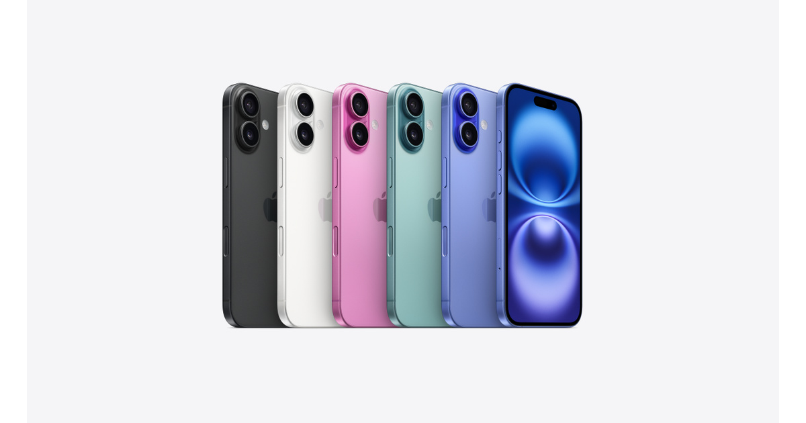
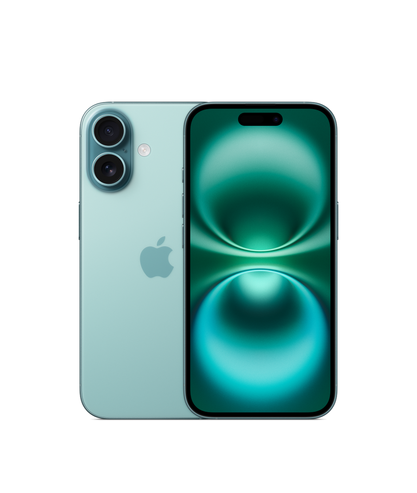

Escolha com informação.
Entenda as diferenças entre os modelos e encontre o que acompanha o seu ritmo.
Seu próximo iPhone começa com uma boa conversa. Encontre o seu.
iLIFE POÁ · IPHONES EM POÁ, SP
O iPhone que combina com a sua vida.
Com a atenção de quem está pertinho.

ENCONTRE O SEU
Para criar, trabalhar, se conectar.
Qual combina com você?
Modelos ilustrativos. Consulte nossa equipe para confirmar cores, capacidades, valores e disponibilidade.
IPHONE 16
Uma câmera para guardar os seus momentos.
Desempenho para acompanhar o seu ritmo.
E uma cor que é a sua cara.
Verde-acinzentado

PRAZER, SOMOS A iLIFE
Somos a iLife Poá.
iPhones, acessórios e assistência no Centro de Poá, ao lado da estação.
A gente acredita que escolher um iPhone começa por entender o que faz sentido para você. Por isso, a conversa vem primeiro: seus planos, seu dia a dia e o que você procura.
Conheça nosso InstagramEntenda as diferenças entre os modelos e encontre o que acompanha o seu ritmo.
Fale com a nossa equipe, tire suas dúvidas e combine os próximos passos.
Nossa loja física fica no Centro de Poá, ao lado da estação. Consulte os horários e venha conversar.
SIMPLES, DO SEU JEITO
Veja os detalhes e descubra as possibilidades para o seu dia a dia.
Consulte as opções, valores e disponibilidade diretamente com a equipe.
Defina com a loja a melhor forma de concluir a compra e receber seu aparelho.
ANTES DE ESCOLHER
Uma boa escolha começa
com respostas claras.
Explore o catálogo, escolha um modelo e fale com a equipe pelo Instagram. A loja confirma as opções disponíveis, os valores e os próximos passos para a compra.
O site é um catálogo para você conhecer os aparelhos. O atendimento e as condições de pagamento são combinados diretamente com a loja.
As opções variam por modelo e disponibilidade. No catálogo você encontra referências; nossa equipe confirma as cores e capacidades que podem ser adquiridas.
Converse com a equipe sobre a possibilidade de troca. Informe o modelo, a capacidade e o estado do seu aparelho para consultar as condições.
Nossa loja física fica no Centro de Poá, São Paulo, ao lado da estação. Peça à equipe o endereço completo e os horários de atendimento antes de planejar sua visita.
VAMOS ENCONTRAR O SEU?
Conte o que você procura.
A gente ajuda você a escolher.